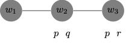
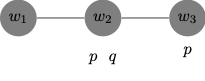
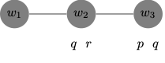
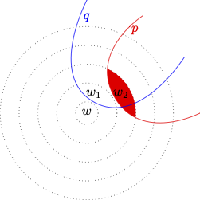
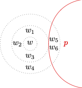
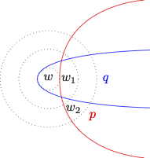
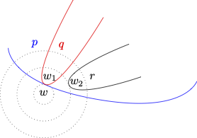

13 Conditionals
Conditional logic and the minimal change framework are motivated by an attempt to capture the truth conditions of subjunctive or counterfactual conditionals of the form
- if the match had been struck, then it would have lit.
Robert Stalnaker originally developed the framework in (Stalnaker 1968) to cover indicative conditionals as well.
- if the match is struck, then it will lit.
Both indicative and counterfactual conditionals have been distinguished from material conditionals, which are true if the antecent is false or if the consequent is true. Neither indicative nor counterfactual conditionals appear to be truth-functional. Nor do they appear to share truth conditions.
Compare the truth conditions of the conditionals below:
if Shakespeare had not written Hamlet, then someone else would have.
if Shakespeare did not write Hamlet, then someone else did.
(Stalnaker 1968) offered a pragmatic explanation of the difference, and he meant the minimal change framework to apply to both indicative and counterfactual conditionals.
The Problem of Conditionals
It is not uncommon to use the material conditional to regiment conditionals of the form ‘if the match is struck, it will lit’ as: \(p \to q\). A material conditional of the form \(p \to q\), however, is truth functional: the conditional is true if, and only if, the antecedent \(p\) is false or the consequent \(q\) is true. That means that the material conditional underwrites inferences of the form: \[ \begin{array}{lllll} & \neg \varphi / \varphi \to \psi & & \psi/\varphi \to \psi & \\ \end{array} \] The paradoxes of material implication arise from that observation, since the patterns in question appear suspect when it comes to the indicative conditional in English. It is not clear that we should be entitled to make inferences such as:
- I will not play the lottery.
- Therefore, if I play the lottery, then I will win the jackpot.
Similarly for the inference:
- I will win the jackpot.
- Therefore, if I do not play the lottery, then I will win the jackpot.
More evidence for the apparent mismatch between the material and indicative conditional is not difficult to find. Here is an example due to Dorothy Edgington:
- If God doesn’t exist, then it’s not the case that if I pray, then my prayers will be answered.
- I don’t pray.
- Therefore, God exists.
Unfortunately, the argument turns out to be valid on the material conditional interpretation of the conditionals on which it would be regimented:
- \(\neg p \to \neg (q \to r)\)
- \(\neg q\)
- \(p\)
The material conditional underwrites a variety of patterns of inference that are suspect for the material conditional.
\[\tag{Monotonicity} \varphi \to \psi/ (\varphi \wedge \chi) \to \psi \]This is a perfectly valid rule of inference. Notice, however, that the indicative conditional appears to flaunt the rule. Here is an example originally due to William Harper:
- If I put sugar in my coffee, it will taste fine.
- Therefore, if I put sugar and motor oil in my coffee, it will taste fine.
\[\tag{Contraposition} \varphi \to \psi / \neg \psi \to \neg \varphi \]
Consider the inference:
- If I travel overseas later this month, then it will not be to Europe.
- If I travel to Europe later this month, then it will not be overseas.
Notice that the conclusion is logically equivalent to ‘if I fail to not travel to Europe later this month, then I will not travel overseas later this month’.
\[\tag{Transitivity} \varphi \to \psi, \psi \to \theta / \varphi \to \theta \]
Consider the inference:
- If a Democrat wins, then a Republican will come a close second.
- If no Republican runs, then a Democrat will win.
- Therefore, if no Republican runs, then a Republican will come a close second.
To appreciate the problem, let \(\varphi\) be ‘no Republican runs’, \(\psi\) be ‘a Democrat will win’, and \(\theta\) be ‘a Democrat will come a close second’.
(McGee 1985) has even questioned whether Modus Ponens is valid for the indicative conditional:
\[\tag{Modus Ponens} \varphi \to \psi, \varphi / \psi \] Here is one of his examples:
- If Uncle Otto doesn’t find gold, then if he strikes it rich, then he’ll strike it rich by finding silver.
- Uncle Otto won’t find gold.
- Therefore, if Uncle Otto strikes it rich, then he’ll strike it rich by finding silver.
Here \(\varphi\) stands for ‘Uncle Otto doesn’t find gold’ and \(\psi\) stands for ‘if he strikes it rich, then he’ll strike it rich by finding silver’.
The Strict Conditional
C.I. Lewis responded to the paradoxes of material implication with a new binary connective, which he called the strict conditional. We are now in a position to represent the strict conditional as a necessitation of the material conditional: \(\Box (p \to q)\).
The strict conditional does not vindicate the two types of inference that played a role in the paradoxes of material implication. We are not allowed to move from \(\neg p\) to \(\Box (p \to q)\) or move from \(q\) to \(\Box (p \to q)\), which suggests progress from the material conditional.
The strict conditional, however, supports perfectly parallel patterns of inference: \[ \begin{array}{lllll} & \Box \neg p / \Box (p \to q) & & \Box q / \Box (p \to q). & \\ \end{array} \]
But it is again not clear that we should be entitled to make inferences such as:
- There are necessarily infinitely many primes.
- Therefore, if there are finitely many primes, then I will win the jackpot.
Similarly for the inference:
- There are necessarily infinitely many primes.
- Therefore, if I play the lottery, then there will be infinitely many primes.
But more importantly for our purposes, the strict conditional supports a variety of patterns of inference we found problematic for the indicative conditional. All these rules are valid in against the background of the minimal modal logic \(\textsf{K}\):
\[\tag{Monotonicity} \Box (\varphi \to \psi)/ \Box ((\varphi \wedge \chi) \to \psi) \] \[\tag{Contraposition} \Box (\varphi \to \psi)/ \Box(\neg \psi \to \neg \varphi) \]
\[\tag{Transitivity} \Box(\varphi \to \psi), \Box(\psi \to \theta)/ \Box(\varphi \to \theta) \]
That suggests that the strict conditional is still not the best candidate to regiment the indicative conditional. Nor does it help that the behavior of the strict conditional is highly sensitive to the modal framework within which it is embedded: \[ \begin{array}{lllll} & \vdash_{S4} \Box(\varphi \to \psi) / \Box \Box (\varphi \to \psi) & & & \\ & \vdash_{S5} \neg \Box (\varphi \to \psi) / \Box \neg (\varphi \to \psi) & & & \\ \end{array} \]
Conditional Logic
One application of the possible worlds framework is the development of a theory of indicative and counterfactual conditionals due to Robert Stalnaker in (Stalnaker 1968) and a subsequent development due to David Lewis in (Lewis 1973). The key thought is that we can explain the truth conditions of an indicative conditional in terms of the truth conditions of the material conditional as evaluated in a world that incorporates a minimal departure from the world of evaluation required to render the antecedent true.
A conditional such as ‘if the match is struck, then it will lit’ is true if, and only if, the corresponding material conditional ‘the match is struck \(\to\) the match will lit’ is true at the closest possible world at which the match is struck. While that conditional strikes us as true, the condtional ‘if I play the lottery, then I will win the jackpot’ strikes us as false; on the minimal change approach, the reason is simple: the closest world at which I play the lottery is presumably one at which I do not win.
To make the proposal more precise, let us introduce the language of conditional logic as an extension of the language propositional logic supplemented with a new binary connective for the new conditional.
Syntax
We expand the language of modal propositional logic with a binary sentential operator for the new conditional \(>\).
We read \(\varphi > \psi\) as the indicative conditional ‘if \(\varphi\), then \(\psi\)’, and we read \(\varphi \to \psi\) as the material conditional ‘not-\(\varphi\) or \(\psi\)’. That means that unlike the indicative conditional, the material conditional is truth-functional.
Minimal Change Semantics for Conditional Logic
We will now make precise the minimal change semantics for the new conditional. To simplify discussion, we omit the accessibility relation for \(\Box\), which we will implicitly assume to the universal relation on \(W\).
A pre-Stalnaker model is an ordered triple \((W, \{\leq_w : w\in W\}, V)\), where:
\(W\) is a non-empty set of worlds.
\(\{\leq_w: w \in W\}\) is a family of similarity relations for each world in \(W\), where for each \(x, y, w\in W\):
\(x \leq_w y\) is read: \(x\) is at least as similar to \(w\) as \(y\). These similarity relations are reflexive, transitive, strongly connected, and anti-symmetric:
- for all \(w \in W\), \(\leq_w\) is reflexive on* \(W\): for all \(x\in W\), \(x \leq_w x\).
- for all \(w \in W\), \(\leq_w\) is transitive on \(W\): for all \(x, y, z\in W\), \(x \leq_w y\), and \(y \leq_w z\), then \(x \leq_w z\).
- for all \(w \in W\), \(\leq_w\) is strongly connected on \(W\): for all \(x, y\in W\), \(x \leq_w y\) or \(y \leq_w x\).
- for all \(w \in W\), \(\leq_w\) is anti-symmetric on \(W\): for all \(x, y \in W\), \(x \leq_w y\) and \(y\leq_w x\), then \(x =y\).
\(V\) is a valuation function for \(\mathcal{L}\), which maps each atom to a subset of \(W\).
We provide a recursive definition of truth at a world in a pre-Stalnaker model.
We define what is for a formula \(\varphi\) to be true at a world \(w\) in a pre-Stalnaker model \(M\), which we write: \(M, w \Vdash \varphi\): \[ \begin{array}{lll} M, w \Vdash p & \text{iff} & w \in V(p)\\ M, w \Vdash \neg \varphi & \text{iff} & M, w \nVdash \varphi\\ M, w \Vdash (\varphi \to \psi) & \text{iff} & M, w \nVdash \varphi \ \text{or} \ M, w \Vdash \psi\\ M, w \Vdash \Box \varphi & \text{iff} & \text{for every} \ u \in W, \ M, u \Vdash \varphi\\ M, w \Vdash (\varphi > \psi) & \text{iff} & \text{for every} \ u \in W, \text{if} \\ & & \ (M, u\Vdash \varphi \ \text{and for all} \ v \in W, \ M, v\Vdash \varphi, \ \text{then} \ u \leq_w v), \ \text{then} \\ & & \ M, u \Vdash \psi.\\ \end{array} \]
Here is a simpler gloss of the truth conditions for \((\varphi > \psi)\):
- for every \(u \in W\), if \(u\) is the closest-to-\(w\) \(\varphi\)-world, then \(u\) is a \(\psi\)-world.
Notice that \((\varphi > \psi)\) becomes vacuously true at a world \(w\) if there is no closest-to-\(w\) \(\varphi\)-world in the model. That would be the case, for example, if the model contained no \(\varphi\)-worlds at all, or if it contained some \(\varphi\)-worlds but none of them qualified as the closest-to-\(w\) \(\varphi\)-world. In either case, the conditional would be counted as true.
While pre-Stalnaker models have some intrinsic interest, they suffer from what Stalnaker deems at least two defects. First, they include no guarantee that each world counts as the closest world to itself. Second, as mentioned above, they do not by themselves guarantee the existence of a closest-to-\(w\) \(\varphi\)-world even if we are given the existence of some \(\varphi\)-worlds.
We define a Stalnaker model to be a pre-Stalnaker model of the form \((W, \{\leq_w : w\in W\}, V)\), which satsifies:
The Base Assumption:
For all \(w \in W\), for all \(x \in W\), \(w \leq_w x\).
That is, no world is closer to \(w\) than \(w\) itself.
The Limit Assumption:
For all \(w \in W\), if \(M, w \Vdash \Diamond \varphi\), then for some \(u \in W\),
- \(M, u \Vdash \varphi\), and
- For all \(v\in W\), if \(M, v \Vdash \varphi\), then \(u \leq_w v\).
That is, if \(\varphi\) is possible at \(w\), then there is a closest-to-\(w\) \(\varphi\)-world.
We are in a position to define truth and validity:
A formula \(\varphi\) is true in a Stalnaker model \(M\), written: \(M \Vdash \varphi\), if, and only if for every \(w \in W\), \(M, w \Vdash \varphi\).
A formula \(\varphi\) is valid, written: \(\models \varphi\), if, and only if \(\varphi\) is true in every Stalnaker model.
In order to become more familiar with these definitions, it will be helpful to provide illustrations of the contrast between valid and invalid formulas of the language of conditional logic.
We begin with some examples of validity.
\(\models (p \wedge q) \to (p >q)\).
That is, \((p \wedge q) \to (p >q)\) is true in every Stalnaker model.
For let \(M = ( W, \{\leq_w: w\in W\}, V )\) be a Stalnaker model and let \(w \in W\).
We now argue that \(M, w \Vdash p >q\) if \(M, w \Vdash p \wedge q\).
Assume \(M, w \Vdash p \wedge q\) then. To evaluate \(p >q\) at \(w\), we note that given the Base Assumption, since \(M, w \Vdash p\), \(w\) is the closest-to-\(w\) \(p\)-world. Since, by assumption, \(M, w \Vdash q\), we conclude that the closest-to-\(w\) \(p\)-world is a \(q\)-world, which means that \(M, w \Vdash p >q\).
\(\models (p > q) \wedge (p \wedge q > r) \to (p > r)\).
That is, \((p > q) \wedge (p \wedge q > r) \to (p > r)\) is true in every Stalnaker model.
For let \(M = ( W, \{\leq_w: w\in W\}, V )\) be a Stalnaker model and let \(w \in W\).
We now argue that \(M, w \Vdash p >r\) provided that \(M, w \Vdash p > q\) and \(M, w \Vdash p \wedge q > r\).
Assume \(M, w \Vdash p > q\) and \(M, w \Vdash p \wedge q > r\) then.
To evaluate \(p >r\) at \(w\), we should distinguish two cases:
There are no \(p\)-worlds in \(W\) in which case \(p > r\) will be vacuously true at \(w\) in \(M\).
There are some \(p\)-worlds in \(W\) in which case, by the Limit Assumption, there is such thing as the closest-to-\(w\) \(p\)-world, which we call \(u\). From the fact that \(M, w \Vdash p >q\), we know that \(u\) is a \(q\)-world. Since the closest-to-\(w\) \(p\)-world, namely, \(u\), is a \(q\)-world, \(u\) itself must the be the closest-to-\(w\) \(p\wedge q\)-world. From \(M, w \Vdash p \wedge q >r\), we now infer that \(u\) is an \(r\)-world. Therefore, since the closest-t-\(w\) \(p\)-world is an \(r\)-world, we conclude \(M, w \Vdash p >r\).
\(\models \Box (p \to q) \to (p > q)\).
That is, \(\Box (p \to q) \to (p > q)\) is true in every Stalnaker model.
For let \(M = ( W, \{\leq_w: w\in W\}, V )\) be a Stalnaker model and let \(w \in W\).
We now argue that \(M, w \Vdash p >q\) provided that \(M, w \Vdash \Box (p \to q)\).
Assume \(M, w \Vdash \Box (p \to q)\) then.
To evaluate \(p >q\) at \(w\), we should distinguish two cases:
There are no \(p\)-worlds in \(W\) in which case \(p > q\) will be vacuously true at \(w\) in \(M\).
There are some \(p\)-worlds in \(W\) in which case, by the Limit Assumption, there is such thing as the closest-to-\(w\) \(p\)-world, which we call \(u\). From the fact that \(M, w \Vdash \Box (p \to q)\), we know that \(u\) is a \(q\)-world. Since the closest-to-\(w\) \(p\)-world, namely, \(u\), is a \(q\)-world, we conclude \(M, w \Vdash p > q\).
We now look at some differences between the new conditional and the material conditional.
\(\not \models (p > q) \to (p \wedge r > q)\).
Here is a Stalnaker model in which the material conditional fails. For let \(M = (W, \{\leq_w: w\in W\}, V)\) be such that
\(W = \{w_1, w_2, w_3\}\)
\(\leq_{w_1}\) is such that
\(w_1 \leq_{w_{1}} w_1\),
\(w_1 \leq_{w_{1}} w_2\),
\(w_2 \leq_{w_{1}} w_2\),
\(w_2 \leq_{w_{1}} w_3\), and
\(w_3 \leq_{w_{1}} w_3\)
\(V\) is a valuation function such that
- \(V(p) = \{w_2, w_3\}\),
- \(V(q) = \{w_2\}\), and
- \(V(r) = \{w_3\}\).
Here is a diagrammatic representation of the model and the relation of similarity to \(w_1\): \(\leq_{w_{1}}\).

Now:
\(M, w_1 \Vdash p > q\) because the closest-to-\(w_1\) \(p\)-world is \(w_2\), which is a \(q\)-world.
\(M, w_1 \nVdash p \wedge r > q\) because the closest-to-\(w_1\) \(p\wedge r\)-world is \(w_3\), which is not a \(q\)-world.
\(\not \models (p > q) \to (\neg q > \neg p)\).
Here is a Stalnaker model in which the material conditional fails. For let \(M = (W, \{\leq_w: w\in W\}, V)\) be such that
\(W = \{w_1, w_2, w_3\}\)
\(\leq_{w_1}\) is such that
\(w_1 \leq_{w_{1}} w_1\),
\(w_1 \leq_{w_{1}} w_2\),
\(w_2 \leq_{w_{1}} w_2\),
\(w_2 \leq_{w_{1}} w_3\), and
\(w_3 \leq_{w_{1}} w_3\).
\(V\) is a valuation function such that
- \(V(p) = \{w_2, w_3\}\), and
- \(V(q) = \{w_1, w_2\}\).
Here is a diagrammatic representation of the model and the relation of similarity to \(w_1\): \(\leq_{w_{1}}\).

Now:
\(M, w_1 \Vdash p > q\) because the closest-to-\(w_1\) \(p\)-world is \(w_2\), which is a \(q\)-world.
\(M, w_1 \nVdash \neg q > \neg p\) because the closest-to-\(w_1\) \(\neg q\)-world is \(w_3\), which is not a \(\neg p\)-world.
\(\not \models (p > q) \wedge (q > r)\to (p > r)\).
Here is a Stalnaker model in which the material conditional fails. For let \(M = (W, \{\leq_w: w\in W\}, V)\) be such that
\(W = \{w_1, w_2, w_3\}\)
\(\leq_{w_1}\) is such that
\(w_1 \leq_{w_{1}} w_1\),
\(w_1 \leq_{w_{1}} w_2\),
\(w_2 \leq_{w_{1}} w_2\),
\(w_2 \leq_{w_{1}} w_3\), and
\(w_3 \leq_{w_{1}} w_3\)
\(V\) is a valuation function such that
- \(V(p) = \{w_3\}\),
- \(V(q) = \{w_2, w_3\}\), and
- \(V(r) = \{w_2\}\).
Here is a diagrammatic representation of the model and the relation of similarity to \(w_1\): \(\leq_{w_{1}}\).

Now:
\(M, w_1 \Vdash p > q\) because the closest-to-\(w_1\) \(p\)-world is \(w_3\), which is a \(q\)-world.
\(M, w_1 \Vdash q > r\) because the closest-to-\(w_1\) \(q\)-world is \(w_2\), which is a \(r\)-world.
\(M, w_1 \nVdash p > r\) because the closest-to-\(w_1\) \(p\)-world is \(w_3\), which is not an \(r\)-world.
Sphere Models for Counterfactuals
David Lewis proposed an alternative model theory for the logic counterfactual conditionals in (Lewis 1973). He embraced the minimal change approach to conditional logic but he objected to the use of Stalnaker models for a logic of counterfactual conditionals.
Similarity may not be anti-symmetric: two worlds may sometimes be tied for similarity to the world of evaluation. In those cases, each world is at least as similar to the world of evaluation as the other, yet they remain distinct.
We should allow for failures of the Limit Assumption to accommodate infinite descending chains of similarity.
We should look at each objection in turn.
Against Anti-Symmetry
If similarity is an anti-symmetric relation, we should be able to validate two principles that appear implausible for the subjunctive or counterfactual conditional:
\[\tag{CEM} (\varphi > \psi) \vee (\varphi > \neg \psi) \]
But you may doubt the principle is plausible for subjunctive or counterfactual conditionals. Consider, for example, the argument:
- Either if I had tossed a coin, it would have landed heads or if I had tossed a coin, I would have not landed heads.
\(\models (\varphi > \psi) \vee (\varphi > \neg \psi)\).
For let \(M = ( W, \{\leq_w: w\in W\}, V )\) be a Stalnaker model and let \(w \in W\).
We now argue that \(M, w \Vdash \varphi > \neg \psi\) if \(M, w \nVdash \varphi > \psi\).
Assume \(M, w \nVdash \varphi > \psi\) then.
To evaluate \(\varphi > \neg \psi\) at \(w\), we should distinguish two cases:
There are no \(\varphi\)-worlds in \(W\) in which case \(\varphi > \neg \psi\) will be vacuously true at \(w\) in \(M\).
There are some \(\varphi\)-worlds in \(W\) in which case, by the Limit Assumption, there is such thing as the closest-to-\(w\) \(\varphi\)-world, which we call \(u\). From the fact that \(M, w \nVdash \varphi > \psi\), we deduce that \(u\) is not a \(\psi\)-world. Since the closest-to-\(w\) \(\varphi\)-world, namely, \(u\), is a \(\neg \psi\)-world, we conclude \(M, w \Vdash \varphi > \neg \psi\).
\[\tag{Distribution} (\varphi > (\psi \vee \theta)) \to ((\varphi > \psi) \vee (\varphi > \theta)) \]
This principle may again seem implausible
if I had tossed the coin, then it would have landed heads or tails
Either if I had tossed the coin, then it would have landed heads or if I had tossed the coin, it would have landed heads.
\(\models (\varphi > (\psi \vee \theta)) \to ((\varphi > \psi) \vee (\varphi \ > \theta))\).
That is, \((\varphi > (\psi \vee \theta)) \to ((\varphi > \psi) \vee (\varphi > \theta))\) is true in every Stalnaker model.
For let \(M = ( W, \{\leq_w: w\in W\}, V )\) be a Stalnaker model and let \(w \in W\).
We now argue that \(M, w \Vdash \varphi > \theta\) if \(M, w \Vdash \varphi > (\psi \vee \theta)\) and \(M, w \nVdash \varphi > \psi\).
Assume \(M, w \Vdash \varphi > (\psi \vee \theta)\) and \(M, w \nVdash \varphi > \psi\) then.
To evaluate \(\varphi > \neg \psi\) at \(w\), we should distinguish two cases:
There are no \(\varphi\)-worlds in \(W\) in which case \(\varphi > \neg \theta\) will be vacuously true at \(w\) in \(M\).
There are some \(\varphi\)-worlds in \(W\) in which case, by the Limit Assumption, there is such thing as the closest-to-\(w\) \(\varphi\)-world, which we call \(u\). From the fact that \(M, w \Vdash \varphi > (\psi \vee \theta)\), we deduce that \(u\) is a \((\psi \vee \theta)\)-world. Yet, from the fact that \(M, w \nVdash \varphi > \psi)\), we have that \(u\) is not a \(\psi\)-world, which means it it a \(\theta\)-world. Since the closest-to-\(w\) \(\varphi\)-world, namely, \(u\), is a \(\theta\)-world, we conclude \(M, w \Vdash \varphi > \theta\).
(Lewis 1973) thought these principles are patently false for counterfactual conditionals. According to Lewis, we should accept the negation of certain instances of Conditional Excluded Middle for counterfactuals:
- It is neither the case that if Bizet and Verdi had been compatriots, then they would have both been French nor that if they had been compatriots, then they would have not both been French.
Even Conditional Excluded Middle is false, we may be inclined to accept:
- If Bizet and Verdi had been compatriots, then they might have both been French and if Bizet and Verdi had been compatriots, then they might have not both been French.
According to Lewis, Distribution is subject to a similar problem. On the one hand:
- If Bizet and Verdi had been compatriots, then they would have both been French or they would have both been Italian.
Yet:
- It is neither the case that if Bizet and Verdi had been compatriots, then they would have both been French nor that if they had been compatriots, then they would have both been Italian.
Even Distribution is false, we may be inclined to accept:
- If Bizet and Verdi had been compatriots, then they might have both been French and if Bizet and Verdi had been compatriots, then they might have both been Italian.
Against the Limit Assumption
The Limit Assumption rules out pre-Stalnaker models in which a formula \(\varphi\) is not true at the world of evaluation \(w\), yet it is true at each world occurring in an infinite descending chain of similarity \((u_n: n\in \mathbb{N})\) where for each \(n\), \(u_{n+1} \leq_w u_{n}\). That is, for each \(\varphi\) world in the model, there is a strictly closer-to-\(w\) \(\varphi\)-world.
According to Lewis, the Limit Assumption is not an adequate constraint for the evaluation of counterfactuals such as:
If I had been over 6ft tall, I would have still been below 7ft tall.
I I had been over 6ft tall, I would have also been over 7ft tall.
One counterfactual strikes us as true whereas the other strikes us a false. There is, on the face of it, no closest world at which I’m over 6ft tall, which means that the Limit Assumption would seem to fail when it comes to similarity to the actual world.
Notice that it is no solution to this problem to fall back to pre-Stalnaker models, since they would still vacuously verify both counterfactuals.
Sphere Models
We focus on a formulation of Conditional Logic in which \(>\) is replaced by \(\Box \! \! \to\), which is meant to regiment the counterfactuol conditional. (Lewis 1973) refines the thought that the truth conditions of the counterfactual \(p \ \Box \!\! \to q\) should be explained in terms of the truth conditions of the material conditional \(p \to q\) at \(p\)-worlds that are otherwise minimally different from the world of evaluation.
A counterfactual conditional of the form
- if \(p\) had been the case, then \(q\) would have been the case.
is true at a world \(w\) If, and only if, no \(p\)-and-\(\neg q\)-world is closer to \(w\) than a \(p\)-and-\(q\)-world.
That is, not world at which \(p \to q\) fails is closer to \(w\) than a \(p \to q\)-world.
A counterfactual conditional such as ‘if the match had been struck, then it would have lit’ is true if, and only if, no world in which the material conditional ‘the match is struck \(\to\) the match will lit’ fails is closer to the actual world than a world at which the conditional obtains.
To make the proposal precise, (Lewis 1973) makes use of spheres of similarity: there is, for each world, a nested system of spheres centered on the world of evaluation, which provide a formal representation of the spheres of similarity for that world. Each sphere includes worlds, which are tied to each other with respect to similarity to the world of evaluation, which is placed at the center of the system of spheres. The main constraint is that the closer a world is to the world of evaluation, the closer the sphere of similarity to which it belongs is to the center.
Consider the sphere model represented by the diagram:

The diagram represents the fact that \(w_1\) is closer to \(w\) than \(w_2\) by placing \(w_1\) and \(w_2\) in different spheres of similarity and by making sure \(w_1\) lies in the sphere closer to the center. The minimal departures of \(w\) in which \(p\) is true are worlds that lie in the innermost sphere where \(p\) is satisfied, which is the shaded area in the diagram.
We will declare \(p \ \Box \! \! \to q\) to be true at \(w\) If, and only if, \(q\) is true at \(p\)-worlds that are minimally different from \(w\), e.g., \(w_2\).
For a more formal treatment of sphere models, consider the definition:
A sphere model is an ordered triple \((W, O, V)\), where:
\(W\) is a non-empty set of worlds.
\(O\) is a function from \(W\) into a system of spheres \(O_w\), which is a set of sets of possible worlds in \(W\) for which:
- for all \(w \in W\), \(O_w\) is centered on \(w\): \(\{w\} \in O_w\).
- for all \(w \in W\), \(O_w\) is nested: for all \(X, Y\in O_w\), \(X \subseteq Y\) or \(Y \subseteq X\).
- for all \(w \in W\), \(O_w\) is closed under union.
- for all \(w \in W\), \(O_w\) is closed under non-empty intersection.
\(V\) is, as usual, a valuation function for \(\mathcal{L}\), which maps each propositional variable to a subset of \(W\).
The worlds in a system of spheres \(O_w\) centered on \(w\) are stratified into spheres or layers according to their distance with respect to the world of evaluation. The innermost sphere or layer \(\{w\}\) contains \(w\), which is the closest world to \(w\). And if \(X \subset Y\), then the worlds in \(X\) are strictly closer to the world of evaluation \(w\) than the worlds in \(Y \setminus X\).
A partial specification of a sphere models will generally include the system of spheres generated by the relation of similarity to the world of evaluation.
- \(W = \{w, w_1, w_2, w_3, w_4, w_5, w_6\}\)
- \(O_w = \{S_1, S_2, S_3\}\), where:
- \(S_1 = \{w\}\)
- \(S_2 = \{w, w_1, w_2, w_3\}\)
- \(S_3 = \{w, w_1, w_2, w_3, w_4, w_5, w_6\}\)
- \(V(p) = \{w_5, w_6\}\)
For a diagrammatic specification, consider:

We now define what is for a formula to be true at a world in a sphere model.
We define what is for a formula \(\varphi\) to be true at a world \(w\) in a sphere model \(M\), which we write: \(M, w \Vdash \varphi\): \[ \begin{array}{lll} M, w \Vdash p & \text{iff} & w \in V(p)\\ M, w \Vdash \neg \varphi & \text{iff} & M, w \nVdash \varphi\\ M, w \Vdash (\varphi \to \psi) & \text{iff} & M, w \nVdash \varphi \ \text{or} \ M, w \Vdash \psi\\ M, w \Vdash \Box \varphi & \text{iff} & \text{for every} \ u \in W, \ M, u \Vdash \varphi\\ M, w \Vdash (\varphi \ \Box \!\! \to \psi) & \text{iff} & \text{for every} \ u \in W, M, u \nVdash \varphi, \text{or} \\ & & \ \text{for some} \ S \in O_w \ , \text{for some} \ u \in S, \ M, u\Vdash \varphi, \ \text{and}\\ & & \text{for all} \ v \in S, \ M, v \Vdash \varphi \to \psi.\\ \end{array} \]
For a simpler gloss of the truth conditions of \((\varphi \ \Box \!\! \to \psi)\), call a sphere \(S\) a \(\varphi\)-sphere if \(S\) contains at least one \(\varphi\)-world. Then, \((\varphi \ \Box \!\! \to \psi)\) is true at \(w\) if, and only if either no world is a \(\varphi\)-world or else there is a \(\varphi\)-sphere whose members are all \(\varphi \to \psi\)-worlds.
There are no \(\varphi\)-spheres centered on \(w\) or else some \(\varphi\)-sphere consists exclusively of \((\varphi \to \psi)\)-worlds.
Notice that \((\varphi \ \Box \!\! \to \psi)\) is vacuously true at a world if \(\varphi\) is impossible. So, counterfactuals with impossible antecendents, or counterpossibles for short, come out as vacuously true in every world of every sphere model.
We are in a position to define truth and validity:
A formula \(\varphi\) is true in a sphere model \(M\), written: \(M \Vdash \varphi\), if, and only if for every \(w \in W\), \(M, w \Vdash \varphi\).
A formula \(\varphi\) is valid, written: \(\models \varphi\), if, and only if \(\varphi\) is true in every sphere model.
In order to become more familiar with these definitions, it will be helpful to provide illustrations of the contrast between valid and invalid formulas of the language of conditional logic.
We begin with some examples of validity.
\(\models (p \wedge q) \to (p \ \Box \!\! \to q)\).
That is, \((p \wedge q) \to (p >q)\) is true in every sphere model.
For let \(M = ( W, O, V )\) be a sphere model and let \(w \in W\).
We now argue that \(M, w \Vdash p \ \Box \!\! \to q\) provided that \(M, w \Vdash p \wedge q\).
Assume \(M, w \Vdash p \wedge q\) then.
To evaluate \(p \ \Box \!\! \to q\) at \(w\), we note that since \(M, w \Vdash p\), \(\{w\}\) is a \(p\)-sphere centered on \(w\), and since \(M, w \Vdash q\), \(\{w\}\) is a \(p\)-sphere composed exclusively of \(p \to q\)-worlds.
We now illustrate a series of important differences between Lewis’ counterfactual conditional and the material conditional.
\(\not \models (p \ \Box \! \! \to q) \to (\neg q \ \Box \! \! \to \neg p)\).
Here is a sphere model in which the material conditional fails. We let \(M = (W, O, V)\) be such that
- \(W = \{w, w_1, w_2\}\)
- \(O{w} = \{\{w\}, \{w, w_1\}, \{w, w_1, w_2\}\}\)
- \(V\) is a valuation function such that
- \(V(p) = \{w_1, w_2\}\), and
- \(V(q) = \{w, w_1\}\).
Here is a diagrammatic representation of the model and the system of spheres for \(w\).
 Now:
\(M, w \Vdash p \ \Box \!\! \to q\) because \(\{w, w_1\}\) is a \(p\)-sphere all of whose worlds are \(p \to q\)-worlds.
\(M, w \nVdash \neg q \ \Box \!\! \to \neg p\) because there is just one \(\neg q\)-sphere, \(\{w, w_1, w_2\}\), and some worlds in that sphere are not \(\neg q \to \neg p\)-worlds, e.g., \(w_2\).
\(\not \models (p \ \Box \!\! \to q) \to (p \wedge r \ \Box \!\! \to q)\).
Here is a sphere model in which the material conditional fails. We let \(M = (W, O, V)\) be such that
- \(W = \{w, w_1, w_2\}\)
- \(O{w} = \{\{w\}, \{w, w_1\}, \{w, w_1, w_2\}\}\)
- \(V\) is a valuation function such that
- \(V(p) = \{w_1, w_2\}\),
- \(V(q) = \{w_1\}\), and
- \(V(r) = \{w_2\}\).
Here is a diagrammatic representation of the model and the system of spheres for \(w\).

Now:
\(M, w \Vdash p \ \Box \!\! \to q\) because \(\{w, w_1\}\) is a \(p\)-sphere all of whose worlds are \(p \to q\)-worlds.
\(M, w \nVdash p \wedge r \ \Box \!\! \to q\) because there is just one \(p \wedge r\)-sphere, \(\{w, w_1, w_2\}\), and some worlds in that sphere are not \(p \wedge r \to q\)-worlds, e.g., \(w_2\).